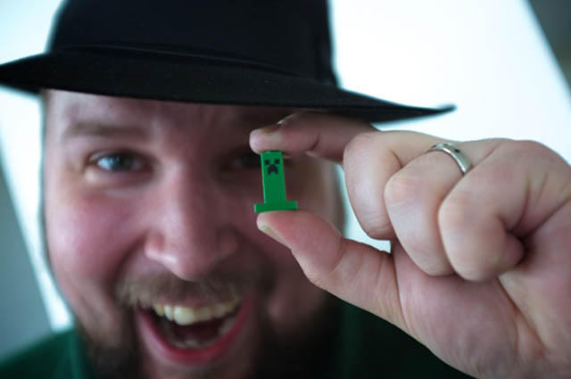

Flirno Gaming
"Je n’aime pas le travail, nul ne l’aime ; mais j’aime ce qui est dans le travail l’occasion de se découvrir soi-même."[Joseph Conrad]

C'est ma tête (me juge pas ok ?)
Mon expérience :
Plein de chose telle que :
- Faire des châteaux de sables.
- Lire des Picsous.
- Pratiquer la respiration quotidiennement.
- Manger des salade [comme les lapins (tu devrais venir voir, c'est vraiment des barres)].
Mes compétences :
Alors je sais faire [du mieux au meilleur x)] :
- Planter des choux,
- à la mode de chez nous.
- Tondre la pellouse askip.
- Coder of curse.
Ma formation :
I'm a....AUTODIDACTE.